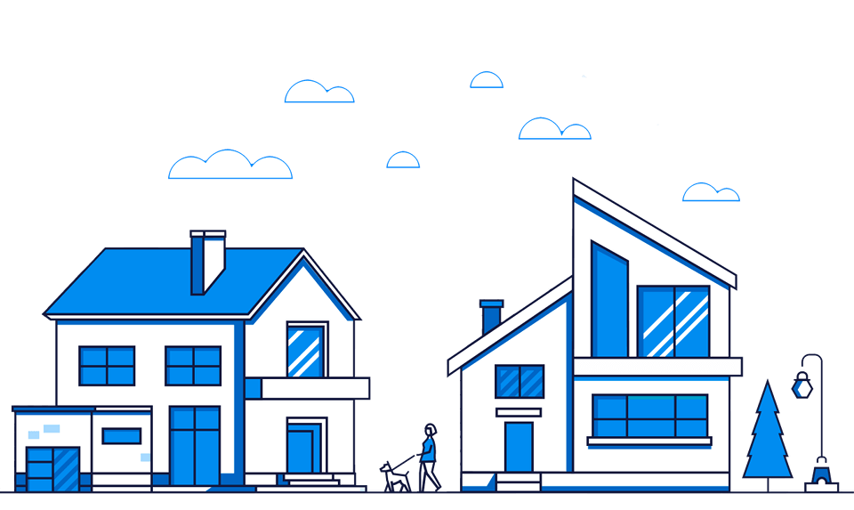

Заказ выписок
из егрн онлайн
Найдите объект по адресу и получите выписку на квартиру, дом, офис или участок в кратчайшие сроки
Найдите объект по адресу и получите выписку на квартиру, дом, офис или участок в кратчайшие сроки
80% заказов готовы за 2 часа, среднее время получения документа 17 часов
Стоимость выписок от 60 руб
Вернём деньги, если вы не получите документ за 3 дня
Выписка приходит в двух форматах: XML с электронной подписью Росреестра и PDF с синей печатью
Получаем сведения из ЕГРН в момент обращения без задержек и неточностей
Выпиской из ЕГРН называют документ, выдаваемый Росреестром. До 1.01.2017 г. Росреестр выдавал выписку из:
С 1.01.2017 г. по новому ФЗ-218 от 13.07.2015 г. эти выписки объединены в одну, называемую «Выписка из ЕГРН». Она содержит одновременно и характеристики из ГКН, и права из ЕГРП.
Данные из ЕГРН доступны для использования любым физическим или юридическим лицом.
Законодательство РФ ограничивает срок действия только актуальностью информации, содержащейся в документе. Но большинство государственных учреждений, а также финансовых, налоговых и т. п. организаций принимают документ не старше одного месяца.
Проверить выписку просто: нужно перейти на сайт Росреестра, и загрузить документ в соответствующее окошко. Сделать напрямую это можно по ссылке:
https://rosreestr. net/proverka-elektronnogo-dokumenta-rosreestr
.
Вместе с документом необходимо загрузить и файл, содержащий электронную цифровую подпись Росреестра. Затем нажать «Проверить». Проверка занимает всего несколько секунд, а сервис доступен круглосуточно.
Документ можно использовать и в качестве свидетельства права собственности, т. к. полностью подтверждает право владения квартирой, земельным участком и т. п.
Заказать документ можно в любом городе, обратившись в местное отделение МФЦ и заплатив около 600 рублей. С собой нужно иметь документ, подтверждающий личность, и квитанцию об оплате пошлины. Удаленно заказать выписку можно через официальный портал государственных услуг или в нашем сервисе.
При совершении сделки с недвижимостью лучше заказать выписку из ЕГРН самостоятельно. Чтобы снизить риски мошенничества лучше не доверять документам, сделанным лицами, которые могут быть теоретически заинтересованы в обмане.
Используют документ обычно при совершении сделок с квартирами, комнатами, земельными участками и иными объектами недвижимости, а также в случаях, когда недвижимое имущество выступает в качестве залога по кредиту.
Необходим документ в более редких ситуациях при:
Дополнительно выписка может потребоваться во время судебных процессов, в т. ч. по разделу имущества или по определению доли наследования.
Различают выписки по типу данных, которые они содержат. В сервисе Gisan можно заказать основные документы:
Редкие выписки, например, о недееспособности правообладателя или о зарегистрированных договорах долевого участия, можно получить при личном обращении в МФЦ.
Об основных характеристиках
С 2017 г. документ заменяет кадастровый паспорт и выписку из ЕГРП. Используют выписку для предоставления в банки, ФНС, суды, ФМС и т. п. Документ содержит:
Заверяется документ при выдаче электронной цифровой подписью Росреестра.
Расширенная
До 2017 г. называлась кадастровой выпиской об объекте недвижимости. Она отличается объемом содержащейся информации и обычно требуется при выполнении кадастровых работ инженерами. Документ содержит:
Выписка заверяется электронной цифровой подписью филиала ЕГРН. Штамп электронной подписи обязательно содержит дату подписания, а также данные о сертификате.
О переходе прав
Документ используется при совершении сделок для проверки юридической чистоты объекта недвижимости, т. к. он содержит всю историю (с 1998 г.) перехода прав. Из выписки можно узнать данные о предыдущих владельцах и основание, на котором право собственности переходило от владельца и владельцу.
Юридическая сила электронного и бумажного документа равна. Разницы в использовании электронной и бумажной выписки также нет. Все организации имеют специальное программное обеспечение и доступ в Интернет для проверки действительности электронной подписи выписки.